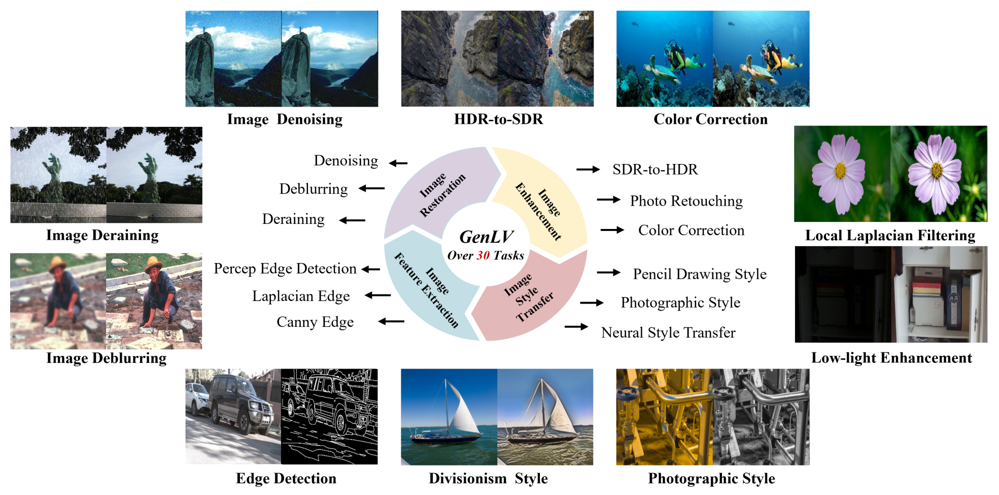
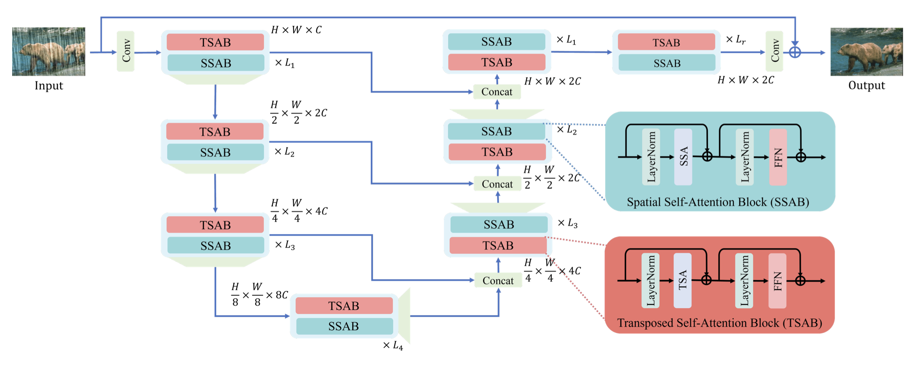

|
Yuandong Pu (蒲沅东)
I am a first-year Ph.D. student of the joint program between
Shanghai AI Laboratory and Shanghai Jiao Tong University
(SJTU).
I am supervised by Prof. Chao Dong.
Prior to that, I received my B.Eng. from Beijing Institute of Technology(BIT) in 2023.
My current research interest mainly lies in image generation, image editing and general low-level vision.
Google Scholar
/
Github
Email: puyuandong01061313 [at] gmail [dot] com
|
|
|
News
2024-07: One paper was accepted to ACM MM 2024.
2024-07: One paper was accepted to ECCV 2024.
2023-09: I became a Ph.D student at XPixel in SJTU.
|
|
Research
*: Equal Contribution, †: Corresponding Author
|
|
arXiv, preprint
|
Conference
|
|

|
Learning A Low-Level Vision Generalist via Visual Task Prompt
Xiangyu Chen, Yihao Liu,
Yuandong Pu,
Wenlong Zhang, Jiantao Zhou, Yu Qiao, Chao Dong†
ACM MM, 2024
|
|

|
A Comparative Study of Image Restoration Networks for General Backbone Network Design
Xiangyu Chen*,
Zheyuan Li*, Yuandong Pu*, Yihao Liu, Jiantao Zhou, Yu Qiao, Chao Dong†
ECCV, 2024
paper
/
code
|
Journal
|
|
|
Ph.D. Student in Electronic Engineering @ Shanghai Jiao Tong University
Sep. 2023 - Current
Advisor: Prof. Chao Dong
|
|
B.Eng. in Artificial Intelligence @ Beijing Institute of Technology
Sep. 2019 - Jun. 2023
GPA: 3.8 / 4.0, Ranking: 1 / 79
|
|
{kind=link}